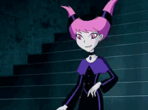

I have loved reading ever since I've known how. It was my first hobby, and there was a time when I'd occupy all my free time with books.
As years have gone by, as it has happened to many, I've found less and less time for reading, and in the little time I do have I rarely have the energy to do so. Since starting University, it's been almost impossible to finish more than 1 or 2 books per year.
In an attempt to get myself to read more, I've decided to keep an online footprint of my thoughts on the books I read. So, here are some of the books I've read or I'm currently reading, and the impressions I had while doing so.

